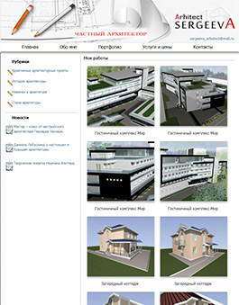
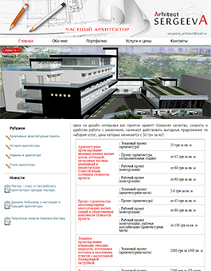
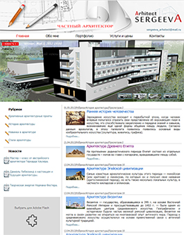
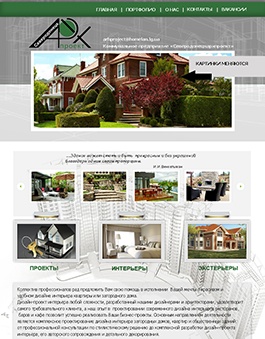
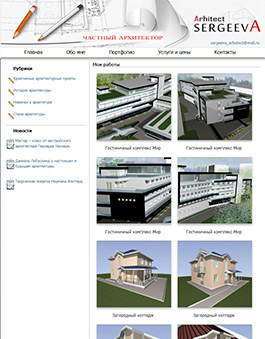
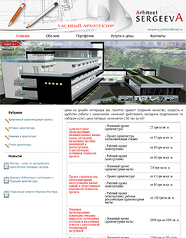
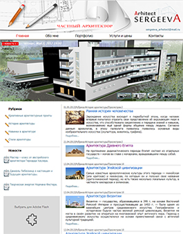
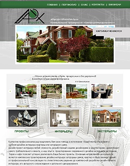

О себе
Меня зовут Толокольникова Виктория Федоровна. Родилась я 26 мая, в городе Северодонецке. Закончила СШ №10. Получила высшее экономическое образование в Институте им. Даля. После изучала "Дизайн компьютерной графики" в копьютерной академии ШАГ г.Луганск. Семейное положение: замужем. У меня двое сыновей: Арсений (11лет) и Савелий (1,3 годиков). Наша семья любит путешествовать, открывать для себя что-то новое.
Резюме
Опыт трудовой деятельности:
С января 2007 – октябрь 2008, дизайнер , ЧП «Партнер». г. Северодонецк
Сфера деятельности: полиграфия.
Должностные обязанности: набор бланков, изготовление визиток, брошюр, верстка газеты, рекламные буклеты.
С апреля 2012 года – верстка сайтов FreeLancer.
C декабря 2012 года по май 2012 года- HTML-верстальщик в веб-студии.
С мая 2012 года по 2018 год - 3D Modeler в компании Bestway.
 






